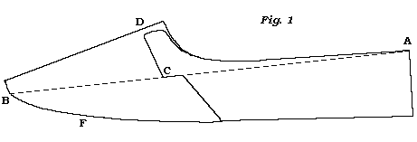

Man�s Shoe.
The bottom stuff (as the sole leather, &c. is commonly called) should be
previously wetted in a tub or pan of clean water, but not too wet, and left to
remain together in a heap for about half an hour, that the water may enter the
pores of the leather, to render it mellow and pliable for the work.
If the soles and inner soles be each in a piece, mark them to the last, and cut them separate: with the top-pieces do the same. Then pare off the loose flesh from off the stuff, and let the seat lifts be split as slanting as you can. Then with two pair of pincers stretch the stuff well across a block, and particularly in the width, and let it be well hammered*. Then mould the soles to the last and put the heel stuff in such a place, that it may get dry by the time you think that you shall use it.
*Some do not hammer the soles till they are going to use them, that they may work the easier, and feel the harder when the shoes are finished, as they think.
But experience tells us that leather will shrink much in drying, and if a shoe be soon finished, the sole will part from the welt, and grin, let the shoe be ever so well put together in every other respect.�But it is not the case when hammered and put to dry; and when you are going to use, them, to damp them, and slightly hammer them over again.
Now that you have the stuff and uppers prepared, fix the inner sole on the last, and fasten it with a tack to the last about the middle of the waist, and rest the last on your two knees, with the sole upward, and support it there with the stirrup: then strain the, inner sole forward towards the toe, and fasten it to the last about two inches from the toe, and do the same to the heel part. Then strain it moderately all round the last, and secure it to the sides with some tacks. Hammer the inner sole moderately to the last, that it may keep its position. Be careful that the inner sole be not too wet, only that it may be mellow and pliable; otherwise the thread and wax will not have that effect they ought to have, and the sewing in all probability will rip.
Nor should you overstrain the inner sole on the last; for all leather when overstrained, whether wet, or dry, but more so when wet, because it gives more then, will contract or shrink to its former position gradually as it dries when the straining force is removed; therefore the inner sole will become narrower than you intended it should be. Some may say that the inner sole will keep its position after the shoe is sewed, but reason and experience inform us to the contrary: indeed, only the interval of time between the rounding of the inner sole and sewing of the same, produces a full proof if the inner sole be too wet.
After you have taken the straining tacks out of the last, round the inner sole just to the edge of the last, unless you have orders to work fuller or narrower than the last. Mark on the inner sole the length of the heel, which is in general from two inches and a half to three inches; but there is no certain rule, for it depends on circumstances and the nature of the work. If the customer that the shoes are for has a long flat seat to his foot, the heel of the shoe must be long, otherwise the shoe will be uneasy to him; and in the wear of the shoe, he will force down the soles nearly even with the top piece at the end of the heel.
With a shoulder stick of a certain breadth mark off on the edge of the inner sole for a feather round the fore part, from the mark of the heel on one side to that on the other. The breadth of the feather must always be in proportion to the substance of the work, it must be full as wide as the thickness of the upper leather, lining, welt, and the distance of the stitching stitch from the upper; therefore the stouter these are, the wider must be the feather.
There are some that do not put a feather to a boot or shoe; but boots or shoes so made can not wear well, for the upper leather will break all round the fore part close to the sole. Because in this case the upper leather will ply short against the hard edge of the inner sole, which will cause the upper leather to break.
But in the case of a sloping feather, that lies on the inside of the upper, full as far as the stitching stitch, it will cause the upper leather to ply in a curve or sweep, which will always prevent the upper from breaking off short.
For example: if you take a twig or wire, and bead either of them backwards and forwards in a curve or sweep, it will not break very easily; but if you will ply either of them short, it will break instantly.
Therefore all boots and shoes that are intended for service should not be made without such a feather; especially at these times, when leather is so badly tanned and curried.
The feather must be of a gradual slope from the mark to the edge; but only at the edge it is to be thin. Likewise let there be a feather to the heel part as wide as the substance of the upper lining, and what will cover the rand when made*.
* Though some will give feather to the fore part, they will give none to the heel part; but for the same reason as above, I advise every one to do it to every kind of work that is for service.�Very light or dress shoes, where the work is required very close, are out of my present question.
The next thing to be done, is to hole the inner sole; but as a guide for the young beginner, and if the insole be thick, take a shoulder stick and mark off from the mark that was made for the feather, further on the inner sole, a width equal to the length of the bold, which should be equal to the thickness of the upper leather, lining, and welt; then: with the point of the knife cut a shallow channel* perpendicular to the inner sole; in that mark and pare off from that; channel sloping to the middle of the inner sole a thin skiving all round the fore part; this will cause a ridge between the channel and the feather of the inner sole, equal in width to the length of the hold.
*But if the inner sole be thin, hole it without.
This hold on the inner sole, being equal to the thickness of the upper leather, lining, and welt, will be sufficient to take up on each side an equal quantity of thread and wax: therefore a wider bold on the inner sole side would render the work too extensive for the threads to have their proper effect, because they could not be drawn in close enough. On the contrary, if the hold be too narrow, it is liable to break out, and will not take in a sufficient quantity of thread and wax to support the work.
Now with an awl rather crooked hole the inner sole, and let there be four or five stitches in an inch at least round the fore part; but in the heel part, if what is called a blind rand, let there be but three.�The number of stitches depends much on the quality of the work; that is, whether it be light or heavy. But mind this, if the stitch be too long, the work cannot he firm, and if too short, it is liable to break through.
The next thing you have to do is
Lasting,
And let the heel-seam of the quarters be fixed exactly even on the middle of the heel part of the last, and fastened there, by putting a tack through one of
the quarters close to the seam, about an inch from the upper part of the
quarter, and another at the bottom, near the edge. Always mind to sink no more
of the quarters
below the last, than what is necessary under the sewing stitch, except when the
upper leather is much too wide in the instab, that you are obliged to sew off
a large portion of the fore part of the quarters; then it will be proper to
sink the hind part to bring it even; otherwise the quarters will bulge out at
the sides, and never fit well.
Let the fittings or instab leathers (if it be not a block last) be fastened to the last with a small tack near the toe; then let the upper leather be drawn gently over the toe of the last, and the crease or middle of the vamp come directly over the middle part of the toe of the last, and with the pincers strain it moderately over the toe, and secure it on the sole side with a tack.
Then at a certain distance from the toe, with the pincers, strain the upper leather tight in the direction of the line AB as in fig. 1st; that is, from the upper end of the quarter at the heel seam, in a direct line along the end of the side seam to the side of the toe; and the same on the other side.

Be careful that they an even on each side, for they are the two principal lasting tacks. If they are not carefully lasted, the upper leather never will be smooth; therefore too great care cannot be taken of them, that they may be equally strained at the same distance from the toe in the above direction*.
*I have known very good old hands in the trade in every respect but that of lasting; and in that they seemed to be like young beginners.
The next two tacks are those at the joints, as at C.: they last the upper tight over the instab and joints. Let the upper leather be lasted direct downward; but if it should incline, let at incline forward.
Let the ends of the side seams be always at the same distance from the toe, and
the same depth from the edge of the last. Never last the quarter beyond the end
of the side seam, towards the heel seam, except the quarter be too shallow to
come under the sewing stitch: and in that case, it is better to take an instab
leather out of the fittings, and endeavour to shove it in after the shoe is
sewed.�But if you do take a leather out, you must last the upper over again,
otherwise the upper leather will not be smooth.
The next two tacks are those
between the joints and the lasting tacks, as in fig. 1.. between B and C.�The
next thing is to last the toe; that is, you must take out the toe and the two
lasting tanks, and turn up the upper over the toe, and take out the tack from the
instab leathers, or fittings.�Then draw the side linings close together, and let a
tack be put in each, and let the ends be cut to meet, and with a small end brace
them together.�Then cut the Lining on each side from the joint sloping towards the
toe: skive the edges, and put a little paste slightly over them; then draw the upper leather over the toe, and see that the lining keeps its place.
After you have secured the upper leather over the toe, let the two lasting tacks be properly strained in the direction as given above.
Then last the toe, by putting a tack or two between the lasting tacks and the toe tack, on each side, as in fig. 1. between B and the toe.
Then brace the toe, by taking the end of a wax thread, and with an awl let it enter the inner sole below the lasting tack, and let it come out in the upper close to the tack that is between C and B, and let it come round the toe, and its purchase on the tack that is on the opposite. But take out the tacks from one lasting tack to the other round the toe, that is, from B to B round the toe, before you fasten the thread; and strain the upper leather back against the thread, till you bring the thread and upper to lie just on the outer holes of the inner sole; and let the upper leather be smooth and free from plaits or wrinkles round the toe.
Though some do not brace the toe, but take the tacks out as they sew; but I advise the former mode.
Now after you have lasted the upper, put a little paste on it, and with a damp spunge let the paste be well rubbed over the upper, to keep the grain smooth in the work, if it be wax leather.
In the next place prepare the welt, by skiving it to the substance the work requires, and let one side be thinned to receive the thread, but in, proportion to the work and thread: for to a. strong and serviceable shoe the welt should not be reduced too thin.
The next article is a sewing thread: and the sewing thread should be wade of the
best green hemp, and well waxed, (as I have directed in the
early part of this work,) and its size full in proportion to the work; for it is better
for the thread to be, of the two, too full than too small, (unless it
be a dress shoe, for that is more for sight than wear,) for if there be
hardly any thread, there can't be much wax; and if there be not sufficient
thread and wax in proportion to the work, the shoe can never be firm.
In Sewing,
Begin with the back part of the shoe, for the rand of the heel requires the
best part of the thread; and let there be a full cast to every stitch on the
quarter side, and let not the stitch be drawn too tight on the quarter, that
the stitch may lie close and smooth, in sewing down the heel, without causing
the quarter to grin or tear. And if you should neglect either or both of them,
you will find great difficulty to make the rand; besides being liable to tear
the quarters.
When you have sewed round the heel, the first stitch in the fore part must come over the end of the welt, and with the thin end of the hammer let the welt be laid close to the upper that lies even with the outer [h]oles of the inner sole, and so you must continue to do for about every eight or ten stitches while you are sewing the fore part.
Likewise you must be careful to wax the thread so often as that it may be kept nearly in the same state as it was when you began with it.
In drawing the threads in sewing, you will find that on one side the end of the thread in hand will come out at the hole nearer to you than that part that goes in at the same side; and on the other side, the end in hand must come out at the hole further from you than that part which goes in on that side: therefore the stitch on the latter side will have the appearance of a half cast, which should always be on the welt side, as it will prevent the welt from grinning.
The sewing awl should be curvilinear, or have a bend similar to that
which is called pump blade, because, in consequence of the curve or bend, you
can rise the hold in the upper leather and welt in the exact point you wish to;
but with a straight awl it will be out of your power, for the straight awl will
rise the hold far beyond
the proper place: therefore the parts will never be brought close enough
together.
After you have done sewing the welt, lay with the hammer the stitch smooth, and pare off the spare leather of the upper and lining close to the welt; and if that part of the welt above the stitch should not be even, pare it so, but not too near the stitch.
The heel part must not be pared, but laid flat with the hammer; and rise the stitch with some straight awl; and with a shoulder stick set the stitch smooth on the welt side of the fore part.
Then lay the best split-lift on the heel part with some tacks, and let it be about a quarter of an inch beyond the outside of the stitch and let the ends come quite flush with the ends of the welt. With the edge of the hammer settle the split-lift, and instead of the tacks put in some pegs; then pare and rasp it even.�Fill the middle of the fore part between the sewing, with skivings of leather, and some paste, for to level the middle with the prominent part of the sewing seam; otherwise the sole will not be even, but in pits and ridges, which will not work nor wear well.
Now let the sole be wetted, so as to be pliant and mellow, and hammer it over slightly, and lay it on the insole, after every thing is done as above directed, and a little paste put between.
Secure the sole in the waist with a tack about two inches below the joints; then draw it over the toe, and secure it with a tack about two inches from the toe, and with two tacks fasten it at the heel part.�Then settle the sole well, and pare it round the fore part at a certain distance from the sewing stitch on the welt side: which distance depends on the substance of the shoe, and it must correspond with the width of the feather of the inner sole; for, if the sole be left wider than the feather of the inner sole, the fore part will project or shelve out frightfully beyond the upper leather; and if too much under the feather, it will cover the welt and bury the work, and the welt will be too close. But in rounding the sole to the welt, you must be careful to leave enough of the sole to pare off in making the fore part after stitching; therefore there must be enough left to clear the sewing stitch, to receive the stitching stitch, and to make the fore part.
Now you have rounded the sole, take the thin end of the long stick, or thin bone, and force down the welt to the sole from the upper, all round the fore part, as smooth as you can; then, with a thin bone, or iron, work out the welt from the upper towards the edge as much as you can, that no loose welt may remain between the stitching stitch and the upper leather.�Then pare off the spare welt that is beyond the sole, and with the end of a thin bone, or iron, press the welt to the sole all round the fore part, at that distance from the upper leather as to clear the sewing stitch, that it may make a groove kind of impression on the welt where you intend to stitch.
Before you begin to stitch, put on the piece sole, as it will prevent the split-lift to move from its place; but in putting it on, let there be little paste put between, and let it lap over the edge of the sole, for it is much better than to let them meet plumb. In the latter case it is liable to shrink and leave a vacancy between, to the injury of the shoe, and unsightliness of the work.
The stitching thread must be in bigness proportionable to the work; but it is better to be full than too small, for the work will look better and wear firmer than when too small.� Let it be but slightly twisted, that the stitch may lie flat on the welt, though the work is always better for the thread being well twisted, if it has been well waxed before; but if there are a great number of stitches put in the welt, this makes up for the want of hard twisting�Make two threads of about a fathom and a half long, which will answer for a middle-sized shoe.
Always make use of a square, or what is commonly called French awl blade, flatter in the depth than in the width.
Let the first hole be made through the split-lift and sole at the end of the welt, that the first stitch may come over the welt.�In stitching, mind that the thread in hand on the welt side is nearer to you than that which goes on the welt, that you may always have the stitch fair and regular.
The number of stitches to an inch on the welt depends on the substance of the shoe: in a middling shoe, about twelve stitches to an inch will be sufficient ~ and more or less as the shoe is light or heavy: too many will tear the work, and the contrary will not hold it together.�Wax the threads as often as you see they require, that they may be kept nearly in the same state as they were when you began with them.�Cut the channel in the sole inwards, by beginning on the tight side, when the sole is up, and the toe towards you, and as near the edge as the groove on the welt is from the edge*.
*In stitching, mind to clear the sewing stitch, that the awl dues not enter into tiny part of the sewing.
After you have stitched, close up the channel, and with the hammer lay. the sole smooth, and scour it out, arid slick it well with the long stick; then with a piece of sole leather, thinned to-the edge, run it behind the stitch and the upper, which will lay the stitch smooth .�Then take the thin bone, or iron, and run it along the welt on the outside of the stitch, to rise the stitch up smooth and regular. Then with the point of the knife take off the welt from the stitch at a certain distance from the stitch; that is, for a stout shoe at the distance of full the height of the stitch; of a middling, not quite so high as the stitch; and for a light shoe, nearly close to the stitch*.
*How ridiculous it is to see a strong Iabouring man�s shoe with a welt light enough for a dress shoe! and in such cage, the stitches will be out in rags at the edge of the welt before the sole is half worn out. The welt in front of the stitch should be full or close as the shoe is stout or light.
Then pare the sole and welt round the fore part plumb or square to the edge of the welt, and with the rasp lay smooth the paring of the knife, and with a bit of glass lay smooth the roughness of the rasp. Then lay a little soft paste over the stitches round the fore part, and with an iron jigger set the welt and stitches. You should have by you three kinds of jiggers, full, middling, and light.�But in setting the welt with gum water, be careful that the iron is not above blood heat; for, if it should, and that it should bear on the upper leather, it will certainly burn the leather, for no upper leather can bear heat above blood heat, without being scorched.
Likewise, be careful that that part of the iron which is between the stitch and the upper leather does not bear on the upper leather; for, if it should, the friction of the iron against the upper leather wilt cause it to tear as if it had been cut with an edge tool.�Now after you have set the stitches, take the shoulder stick or iron, and set the fore part all round so hard, that the impression may be visible at the edge of the sole, without any future false means; but previously let the edge of the sole and welt be damped with a little thin gum water or paste: and if it should get dry, moisten it with your tongue now and then.
The next part is to make the
Heel.
In the first place, let the heel stuff be perfectly dry and well hammered, so that the lifts, &c. may be hard and dry. Level the sole and piece-sole, and rasp them; put a little paste on the part where the split-lift is to be placed. Fixed the split-lift with a few tacks; pare it round the heel close to the sole: then in room of the tacks put in as many pegs, and with the hammer lay it smooth, and level it with the knife, and rasp the grain off and put some paste over the split-lift and sole, and fix on the lift, and proceed in the same manner as you did with the split~lift, &c.
The common height of the heels of men�s shoes now, is only a top piece above a split-lift: but whether the lifts be more or less, you must be careful that the heel is quite level before the top piece is put on, that no part of the top piece in substance is pared off. After you have proceeded with the lifts as above directed, fix the top piece on with two or three tacks, and with the hammer settle it smooth,�pare it round to the size and form you intend the heel should be; but be careful that the heel is not made too narrow for the width of the shoe. Cut the channel as near to the edge of the top piece, as you think the point of the heel awl will come out at with ease.
Then hole the heel all round, with the awl resting on every link stitch of the rand, except the first and last, which must be before and after the stitch. In holing, the lifts will be moved out of their place, therefore you must settle them down with the hammer before you begin to sew.
The heel thread must be full, well waxed, and well twisted. In sewing, be careful that in drawing the link stitch close you do not tear the quarters. When the heel is sewed, close the channel, and settle the heel well down, and with the thin end of the long stick, or bone, rub down smooth the stitches of the rand.
Then pare off about: a third of the lower side of the seat lift, and with the corner of the hammer turn up the seat lift over the stitch; pare the upper part of the seat lift as near the stitch as you can, so as to leave enough to cover the stitch; then put a little paste between the seat lift and the stitch, and with the hammer lay the seat lift close to the quarters of the shoe; then put some paste on it, and with the back file, file it hard on the stitch and close to the quarters; but be careful that the back file does not fret the quarters. Pare the seat lift and sole, at the side, as close to the quarters as you intend the width of the rand to be; and that must be wide, middling, or close, as the work is strong, middling, or light; then with the rand bone, or iron, set the rand with a little paste under the setter. Then pare the top piece to the size and form you intend it to be; but that you should always do before the heel is sewed, for now you are confined to the channel.
Now, as you have got the top piece formed, and the rand set, let the heel be pared plumb or square to answer the rand and top piece, and with the rasp take off the roughness of the pareing, and with a piece of glass smooth that of the rasp; then put a little paste over the heel, and with a scouring stone rub it well all round; and when done, wipe the paste clean off the heel, and with a rubber slick it well. If you have in the work flattened the rand, set it again, but not with paste, but with a little gum water.
In the next place, take the tacks out of the top piece; but previous to the paring of the heel, you should have put four or five pegs in front of the heel, and fill the holes with pegs, and with the hammer lay the top piece even,�scour it out with a little paste, after you have rasped and scraped it smooth, and slick the edges-of the top piece smooth.
Then, with a pointed knife cut the front of the top-piece of a curve form, but hardly differing the eighth of an inch from that of a straight line; likewise cut the lifts in a perpendicular line with the front of the top piece; but be careful that the knife does not enter the sole.�Now with the end of the long stick slick the front of the heel, and the adjoining sole, and cut down plumb or square the corners of the heel; but always mind that they do come forward on the sole about an eighth of an inch beyond the welt;�the shoe will not only appear better, but will be firmer.
Now clean the shoe well from all dirt, and slick the bottom well, even if it is to be buffed after; prick the stitches of the fore part, and set them, and likewise the rand. Then colour the heel and fore part, and when dry, rub them hard with a piece of flannel, and slick them well, and with a black ball, ball the heel and fore part well; then with a thumb leather spread it even, and with a warm stone rubber set the ball on the heel, and with a warm iron set the rand and fore part. But observe, the balling part may be left till the shoe is taken off the last, which is generally done by many, when they have light work, to prevent malling the stitch and the ball in taking the shoe off the last. When the shoe is taken off the last, bruise the points of the pegs inside of the heel; and with the crooked knife cut them off, and clean out the seat of the heel, and with the end of the long stick lay down the feather of the inner sole to the welt and rand; then rub down the roughness on the inside of the inner sole, and let the upper leather be smooth and even over the welt and rand; and with a damp spunge and a little soft paste lay the grain of the upper leather smooth, if it be wax leather.
So far, with respect to you, the shoe is done.
Before I quit this article, I
advise you, always before you begin the heel, to
have all the lifts that are to be in the heel to be quite dry, and hammered the
second time; and that every lift be well settled, levelled, rasped, and pasted,
before the next is put on: otherwise you will have but a spungy heel, which
are too common in these days, since pegging the heels is out of use; but, by
following the above directions, the heel will stand the wear and the shop.
To make a Man�s Pump.